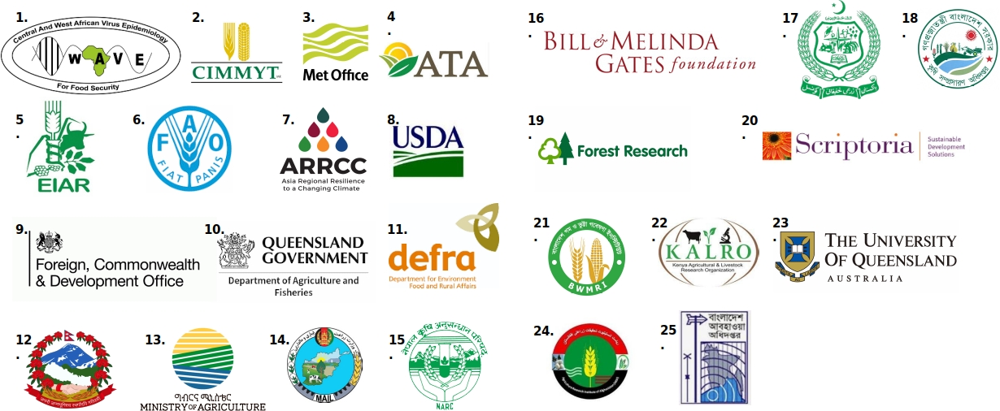

Partners & Collaborators

1) WAVE [Central and West African Virus Epidemiology]; 2) CIMMYT [International Maize and Wheat Improvement Centre]; 3) UK Met Office; 4) ATA [The Ethiopian Agricultural Transformation Agency]; 5) EIAR [The Ethiopian Institute of Agricultural Research; 6); FAO [Food and Agriculture Organization]; 7) ARRCC [Asia Regional Resilience to a Changing Climate Programme]; 8) USDA [United States Department of Agriculture]; 9) FCDO [Foreign, Commonwealth & Development Office, Gov.UK]; 10) Queensland Government [Department of Agriculture Food and Fisheries, Agri-Science Queensland]; 11) DEFRA [Dept. for Environment, Food and Rural Affairs, Gov.UK]; 12) Dept. of Hydrology and Meteorology, Government of Nepal; 13) Ministry of Agriculture, Gov. of Ethiopia; 14) Mail [Ministry of Agriculture, Irrigation and Livestock, Afghanistan]; 15) NARC [National Agricultural Research Centre, Pakistan]; 16) Bill & Melinda Gates Foundation; 17) Pakistan Agricultural research Council; 18) DAE (Dept. of Agricultural Extension, Bangladesh); 19) Forest Research, UK; 20) Scriptoria, Sustainable Development Solutions, UK; 21) BWMRI [Bangladesh Wheat and Maize Research Institute]; 22) KALRO [Kenya Agricultural & Livestock Research Organisation]; 23) University of Queensland, Australia; 24) ARIA [Agricultural Research institute of Afghanistan]; 25) Bangladesh Meteorological Dept., Gov. of Bangladesh